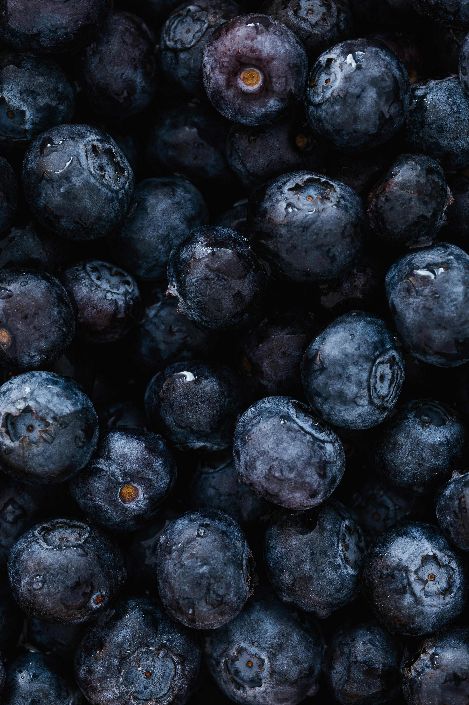

Blueberry Oatmeal Muffins

Photo by Karolina Grabowska from Pexels
This Blueberry Oatmeal Muffin recipe was sourced from my absolute favorite cooking blog ever, Sally's Baking Addiction To view the recipe directly from the source click here
Ingredients
- 1 cup (240mLs) milk
- 1 cup (85g) old fashioned whole rolled oats
- 1 and 1/4 cups (156g) all purpose flour (Learn how to properly measure things here)
- 1 teaspoon baking powder
- 1/2 teaspoon baking soda
- 1/2 teaspoon ground cinnamon
- 1/2 teaspoon salt
- 1/2 cup (8 Tablespoons;113g) unsalted butter, melted and slightly cooled
- 1/2 cup (170g) honey (see notes)
- 1 large egg, room temperature
- 1 teaspoon vanilla extract
- 1 cup (140g) fresh or frozen blueberries (see notes if using frozen)
The Process
- Combine milk and oats and set aside for 20 minutes. Do not skip this step!! Also don't do this step the evening before or even hours before baking.
This is a good time to melt your butter (in a medium bowl, this will help us later) and preheat your oven to 425 F (218 C) and prepare your muffin pan with nonstick spray or cupcake liners.
If your oats haven't soaked any moisture up after 20 minutes, give them a stir and 10 more minutes.
- In a large bowl, whisk your dry ingredients and set aside:
- 1 and 1/4 cups (156g) all purpose flour
- 1 teaspoon baking powder
- 1/2 teaspoon baking soda
- 1/2 teaspoon ground cinnamon
- 1/2 teaspoon salt
- In the bowl you melted your butter in, mix your other wet ingredients, NOT including the oat/milk mixture
- egg (please crack it open)
- 1 teaspoon vanilla extract
- 1/2 cup (170g) honey
- Add your combined wet ingredients to your large bowl of dry ingredients and mix a few times. Add the blueberries and soaked oats (Do NOT drain!). Gently fold until just combined.
- Spoon the batter into the liners or muffin tin nearly to the top (see notes). Top with oats or a sprinkle of sugar (demerara is my favorite) if desired.
- Bake for 5 minutes at 425 F (218 C) and then reduce temperature to 350 F (177 C) and bake for an additional 16-17 minutes, or until a toothpick in the center comes out clean
Allow the muffins to cool for 5 minutes before transferring to a wire rack to finish cooling. They'll keep at room temperature for a few days, but will stay fresh for about a week in the fridge.
Notes
- Milk: I used regular unflavored oat milk instead of cow's milk or other dairy alternative. I'm sure whatever you pick will be fine, but the flavor and texture are going to change, so keep that in mind.
- Oats: Use whole oats. Instant and quick oats will dissolve during cooking and steel cut oats will not absorb the milk.
- Sugar: I used 1 cup of sugar in place of the honey because I couldn't find it and didn't have enough maple syrup.
- Temp: The initial high temperature helps your muffins grow big and tall and the drop in temp helps their innards be soft and light.